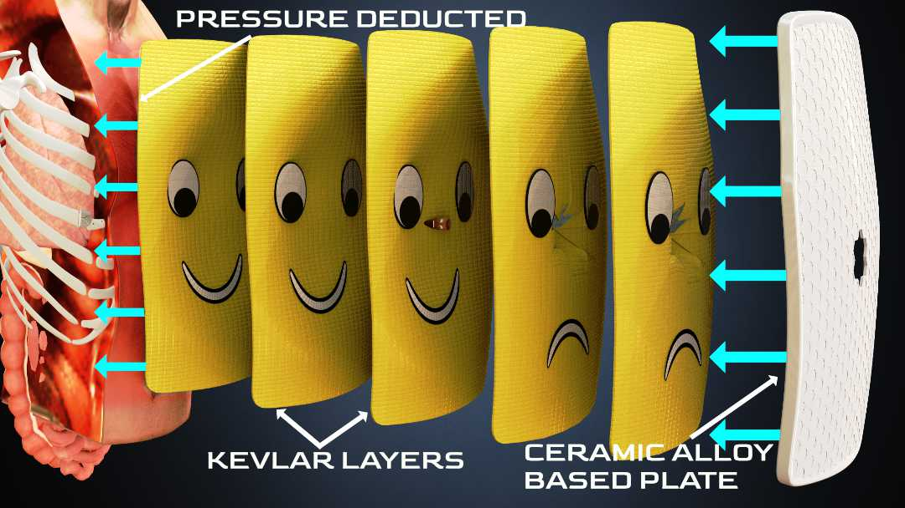

How do bulletproof vests protect wearers?
Modern bulletproof vests save thousands of lives every year. Although a rifle shot may cause a few rib fractures, the vest will not allow the bullet to enter your body. An interesting material called kevlar is the real superhero in the modern bulletproof vest, which has amazing tensile strength with good flexibility. In this article, I will explain about this life saving technology in detail.